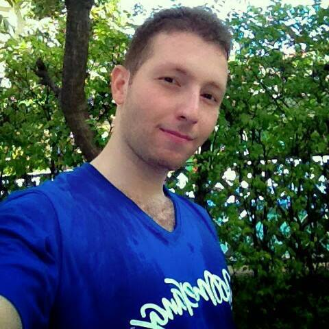

Het portfolio

Mijn detail
Het voornaam: Mhd Alaa
Het achternaam: Darkashli
De leeftijd: 29 jaar
Het woonplaats: Gorinchem
Het adres: Drossaartstraat 6C
Het telefoonnummer: 0685862225
Mijn Facebook pagina
Mijn belangrijkste doelen
Mijn opleiding af te ronden en het Nederlands taal wel te leren.
De hobbies
Boeken lezen, sportief aandoen, surfen en tv kijken.
Werk ervaringen
Arabic Teacher, Pan Asia International School
Bangkok, Thailand 2012-2013
- Gemaakt en onderhouden van een omgeving waarmee en kinderen aan te moedigen om ontdekkingen te doen, oplossingen maken, en onafhankelijke denken.
- Gemaakt ervaringsgerichte excursies die betrokken zowel leerlingen en ouders.
- Geassisteerd bij het voltooien van dagelijkse taken.
- Adviseerde aan studenten op basis van emotionele en gedragsproblemen behoeften.
- Ontwikkelde lesplannen die voldoen aan gevarieerde studenten moet, geëvalueerd en beoordeeld de ontwikkeling van kinderen, en toegepast onderzoek om de vooruitgang van kinderen te verbeteren.
Openbare relaties en Verkoopsmanager, Salloum Dental Company, Ltd.
Damascus, Syrie 2011-2012
- Onderhandelen aanbiedingen met internationale bedrijven.
- Het verwerken van betalingen.
- De uitgifte van aandelen.
- Bevestiging van reizen van klanten en accommodatie reserveringen.
- Het verstrekken van informatie aan klanten over de beschikbare prijzen en maak afspraken.
-
Openbare relaties en Verkoopsmanager, Loujain Company, Ltd.
Damascus, Syrie 2008-2009
- Het maken van boekingen.
- Het ontwikkelen van routes voor de omzet van de groep en zorgen voor begeleiding.
- Marketing pakketten aan klanten met behulp van de marketing afdeling.
- Selling pakketten.
- Werven en trainen van junior medewerkers.
- Antwoord geven op vragen van klanten.
Vaardigheden en kwalificaties
- Computer vaardigheden: Word, Excel, Power Point, Windows and Internet
- Interne en externe relaties in het bedrijf om ervoor te zorgen dat mensen zich gewaardeerd en verwelkomd voelen.
- Mogelijkheid om prioriteiten en krappe deadlines in evenwicht te brengen door het bezit van sterke organiseren en zelf motiveren vaardigheden om een bekwame baan uit te voeren in een snel veranderende omgeving.
- Een effectieve communicatie en een passie om goed te werken met anderen.
- Succesvolle afronding van cursussen, sociale en gedragspsychologie die mij heeft voorzien van een goed begrip van de mensen, hun motivatie, en hun relatie tot de samenleving.
- Een snelle oplossing maken als er nodig is om te verbeteren.
- Het leren van andere fouten en hoe ik het fout in de toekomst kan corrigeren.
- Innoveren, samenwerken, coordineren en aanpassen om mijn eigen zwakke kwalificaties te verbeteren.
Cursussen
- Engels cursussen 2006.
- Leerde een cursus Engels en Verbeteren van de communicatieve vaardigheden.
- Mass media en Communicatie.
- Deelnemen aan een cursus over communicatie en het gebruik van de massa media op het hele internet en Internationale Betrekkingen.
Talen
Arabisch (moedertaal), Engels (vloeiend), Thais (Basis), Nederlands (Basis).
Educatie
Mass Media College, Damascus University 2012